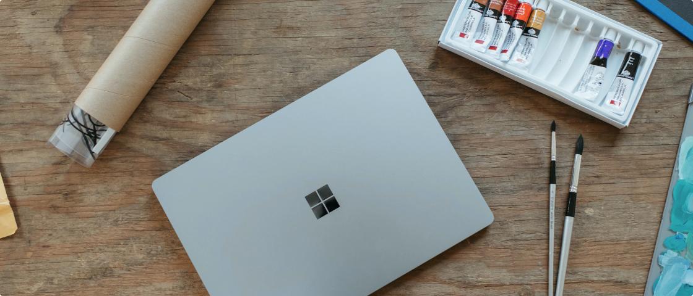

7 Practical CSS Tips
How product designers can break from the status quo and help our planet

Subheader
How long are you awake in the morning before you go online? Perhaps it’s while you’re still lying in bed, using a news feed or social media as the needed stimulant to push you out from under the covers. Or maybe you wait to open your device until after a warm shower and cup of coffee. If you use sleep tracking apps, you might say you never signed off in the first place.
And, like millions of others during the pandemic, the internet is probably what enabled you to stay in touch with family, or complete entire years of work and/or school remotely. If this sounds familiar, then you live in a part of the world where an internet connection now counts as an essential utility — one that’s as easy to take for granted as the natural gas heating your shower water or the electricity powering your coffee maker.
But if you think we’re hyperconnected today, just wait. Globally, just over 55% of today’s households have an internet connection. This gap between the internet haves and have-nots is referred to as the digital divide, and access is skewed toward richer nations. The gap is projected to close in the next decade as billions of homes connect to the internet for the first time and by 2030 it’s estimated that the technology industry could account for 20% of the global electricity demand. This presents a troublesome dichotomy. On one hand, it supports livelihoods, educations, and bolsters the global economy; on the other hand, the increased usage of the apps, websites, and services that we build will place an even greater strain on our already-overloaded power grids.
180
12